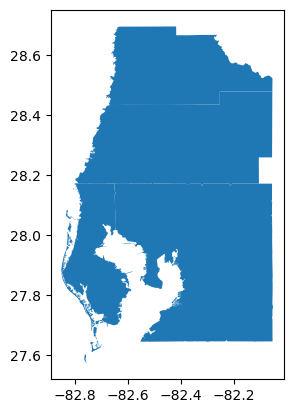

Datasets for use with libpysal¶
As of version 4.2, libpysal has refactored the examples package to:
reduce the size of the source installation
allow the use of remote datasets from the Center for Spatial Data Science at the Unversity of Chicago, and other remotes
This notebook highlights the new functionality
Backwards compatibility is maintained¶
If you were familiar with previous versions of libpysal, the newest version maintains backwards compatibility so any code that relied on the previous API should work.
For example:
from libpysal.examples import get_path
get_path("mexicojoin.dbf")
'/Users/martin/dev/pysal/.pixi/envs/default/lib/python3.14/site-packages/libpysal/examples/mexico/mexicojoin.dbf'
An important thing to note here is that the path to the file for this particular example is within the source distribution that was installed. Such an example data set is now referred to as a builtin dataset.
import libpysal
dbf = libpysal.io.open(get_path("mexicojoin.dbf"))
dbf.header
['POLY_ID',
'AREA',
'CODE',
'NAME',
'PERIMETER',
'ACRES',
'HECTARES',
'PCGDP1940',
'PCGDP1950',
'PCGDP1960',
'PCGDP1970',
'PCGDP1980',
'PCGDP1990',
'PCGDP2000',
'HANSON03',
'HANSON98',
'ESQUIVEL99',
'INEGI',
'INEGI2',
'MAXP',
'GR4000',
'GR5000',
'GR6000',
'GR7000',
'GR8000',
'GR9000',
'LPCGDP40',
'LPCGDP50',
'LPCGDP60',
'LPCGDP70',
'LPCGDP80',
'LPCGDP90',
'LPCGDP00',
'TEST']
The function available is also available but has been updated to return a Pandas DataFrame. In addition to the builtin datasets, available will report on what datasets are available, either as builtin or remotes.
from libpysal.examples import available
df = available()
df.shape
(99, 3)
libpysal.examples.summary()
99 datasets available, 43 installed, 56 remote.
We see that there are 98 total datasets available for use with PySAL. On an initial install (i.e., examples has not been used yet), 27 of these are builtin datasets and 71 are remote. The latter can be downloaded and installed.
Downloading Remote Datasets¶
df.head()
| Name | Description | Installed | |
|---|---|---|---|
| 0 | 10740 | Albuquerque, New Mexico, Census 2000 Tract Dat... | True |
| 1 | AirBnB | Airbnb rentals, socioeconomics, and crime in C... | True |
| 2 | Atlanta | Atlanta, GA region homicide counts and rates | False |
| 3 | Baltimore | Baltimore house sales prices and hedonics | True |
| 4 | Bostonhsg | Boston housing and neighborhood data | False |
The remote AirBnB can be installed by calling load_example:
airbnb = libpysal.examples.load_example("AirBnB")
libpysal.examples.summary()
99 datasets available, 43 installed, 56 remote.
And we see that the number of remotes as declined by one and the number of installed has increased by 1.
Trying to load an example that doesn’t exist will return None and alert the user:
libpysal.examples.load_example("dataset42")
Example not available: dataset42
Getting remote urls¶
If the url, rather than the dataset, is needed this can be obtained on a remote with get_url.
As the Baltimore dataset has not yet been downloaded in this example, we can grab it’s url:
balt_url = libpysal.examples.get_url("Baltimore")
balt_url
'https://geodacenter.github.io/data-and-lab//data/baltimore.zip'
Explaining a dataset¶
libpysal.examples.explain("taz")
taz
===
Dataset used for regionalization
--------------------------------
* taz.dbf: attribute data. (k=14)
* taz.shp: Polygon shapefile. (n=4109)
* taz.shx: spatial index.
taz = libpysal.examples.load_example("taz")
taz.get_file_list()
['/Users/martin/Library/Application Support/pysal/taz/taz-master/README.md',
'/Users/martin/Library/Application Support/pysal/taz/taz-master/taz.dbf',
'/Users/martin/Library/Application Support/pysal/taz/taz-master/taz.shp',
'/Users/martin/Library/Application Support/pysal/taz/taz-master/taz.shx']
libpysal.examples.explain("Baltimore")
balt = libpysal.examples.load_example("Baltimore")
libpysal.examples.available()
| Name | Description | Installed | |
|---|---|---|---|
| 0 | 10740 | Albuquerque, New Mexico, Census 2000 Tract Dat... | True |
| 1 | AirBnB | Airbnb rentals, socioeconomics, and crime in C... | True |
| 2 | Atlanta | Atlanta, GA region homicide counts and rates | False |
| 3 | Baltimore | Baltimore house sales prices and hedonics | True |
| 4 | Bostonhsg | Boston housing and neighborhood data | False |
| ... | ... | ... | ... |
| 94 | taz | Traffic Analysis Zones in So. California | True |
| 95 | tokyo | Tokyo Mortality data | True |
| 96 | us_income | Per-capita income for the lower 48 US states 1... | True |
| 97 | virginia | Virginia counties shapefile | True |
| 98 | wmat | Datasets used for spatial weights testing | True |
99 rows × 3 columns
Working with an example dataset¶
explain will render maps for an example if available
from libpysal.examples import explain
explain("Tampa1")
from libpysal.examples import load_example
tampa1 = load_example("Tampa1")
tampa1.installed
True
tampa1.get_file_list()
['/Users/martin/Library/Application Support/pysal/Tampa1/__MACOSX/TampaMSA/._tampa_counties.sbn',
'/Users/martin/Library/Application Support/pysal/Tampa1/__MACOSX/TampaMSA/._tampa_final_census2.sbx',
'/Users/martin/Library/Application Support/pysal/Tampa1/__MACOSX/TampaMSA/._tampa_counties.sbx',
'/Users/martin/Library/Application Support/pysal/Tampa1/__MACOSX/TampaMSA/._2000 Census Data Variables_Documentation.pdf',
'/Users/martin/Library/Application Support/pysal/Tampa1/__MACOSX/TampaMSA/._tampa_final_census2.sbn',
'/Users/martin/Library/Application Support/pysal/Tampa1/__MACOSX/._TampaMSA',
'/Users/martin/Library/Application Support/pysal/Tampa1/TampaMSA/tampa_final_census2.prj',
'/Users/martin/Library/Application Support/pysal/Tampa1/TampaMSA/tampa_counties.xlsx',
'/Users/martin/Library/Application Support/pysal/Tampa1/TampaMSA/tampa_counties.shx',
'/Users/martin/Library/Application Support/pysal/Tampa1/TampaMSA/tampa_counties.sbx',
'/Users/martin/Library/Application Support/pysal/Tampa1/TampaMSA/tampa_counties.shp',
'/Users/martin/Library/Application Support/pysal/Tampa1/TampaMSA/tampa_final_census2.sqlite',
'/Users/martin/Library/Application Support/pysal/Tampa1/TampaMSA/tampa_final_census2.sbn',
'/Users/martin/Library/Application Support/pysal/Tampa1/TampaMSA/TampaMSA.gdb/a00000005.gdbtablx',
'/Users/martin/Library/Application Support/pysal/Tampa1/TampaMSA/TampaMSA.gdb/a00000004.gdbtablx',
'/Users/martin/Library/Application Support/pysal/Tampa1/TampaMSA/TampaMSA.gdb/a0000000a.gdbtablx',
'/Users/martin/Library/Application Support/pysal/Tampa1/TampaMSA/TampaMSA.gdb/a00000006.FDO_UUID.atx',
'/Users/martin/Library/Application Support/pysal/Tampa1/TampaMSA/TampaMSA.gdb/a00000005.gdbindexes',
'/Users/martin/Library/Application Support/pysal/Tampa1/TampaMSA/TampaMSA.gdb/a0000000a.gdbtable',
'/Users/martin/Library/Application Support/pysal/Tampa1/TampaMSA/TampaMSA.gdb/a00000005.gdbtable',
'/Users/martin/Library/Application Support/pysal/Tampa1/TampaMSA/TampaMSA.gdb/a00000004.gdbtable',
'/Users/martin/Library/Application Support/pysal/Tampa1/TampaMSA/TampaMSA.gdb/gdb',
'/Users/martin/Library/Application Support/pysal/Tampa1/TampaMSA/TampaMSA.gdb/a00000005.CatItemTypesByName.atx',
'/Users/martin/Library/Application Support/pysal/Tampa1/TampaMSA/TampaMSA.gdb/a00000004.spx',
'/Users/martin/Library/Application Support/pysal/Tampa1/TampaMSA/TampaMSA.gdb/timestamps',
'/Users/martin/Library/Application Support/pysal/Tampa1/TampaMSA/TampaMSA.gdb/a00000006.CatRelsByOriginID.atx',
'/Users/martin/Library/Application Support/pysal/Tampa1/TampaMSA/TampaMSA.gdb/a0000000a.spx',
'/Users/martin/Library/Application Support/pysal/Tampa1/TampaMSA/TampaMSA.gdb/a00000004.CatItemsByType.atx',
'/Users/martin/Library/Application Support/pysal/Tampa1/TampaMSA/TampaMSA.gdb/a00000006.CatRelsByDestinationID.atx',
'/Users/martin/Library/Application Support/pysal/Tampa1/TampaMSA/TampaMSA.gdb/a00000007.gdbindexes',
'/Users/martin/Library/Application Support/pysal/Tampa1/TampaMSA/TampaMSA.gdb/a00000005.CatItemTypesByParentTypeID.atx',
'/Users/martin/Library/Application Support/pysal/Tampa1/TampaMSA/TampaMSA.gdb/a00000002.gdbtablx',
'/Users/martin/Library/Application Support/pysal/Tampa1/TampaMSA/TampaMSA.gdb/a00000003.gdbtablx',
'/Users/martin/Library/Application Support/pysal/Tampa1/TampaMSA/TampaMSA.gdb/a00000006.CatRelsByType.atx',
'/Users/martin/Library/Application Support/pysal/Tampa1/TampaMSA/TampaMSA.gdb/a00000007.CatRelTypesByDestItemTypeID.atx',
'/Users/martin/Library/Application Support/pysal/Tampa1/TampaMSA/TampaMSA.gdb/a00000009.gdbtable',
'/Users/martin/Library/Application Support/pysal/Tampa1/TampaMSA/TampaMSA.gdb/a00000009.gdbtablx',
'/Users/martin/Library/Application Support/pysal/Tampa1/TampaMSA/TampaMSA.gdb/a00000007.CatRelTypesByUUID.atx',
'/Users/martin/Library/Application Support/pysal/Tampa1/TampaMSA/TampaMSA.gdb/a00000002.gdbtable',
'/Users/martin/Library/Application Support/pysal/Tampa1/TampaMSA/TampaMSA.gdb/a00000003.gdbtable',
'/Users/martin/Library/Application Support/pysal/Tampa1/TampaMSA/TampaMSA.gdb/a0000000a.gdbindexes',
'/Users/martin/Library/Application Support/pysal/Tampa1/TampaMSA/TampaMSA.gdb/a00000001.gdbindexes',
'/Users/martin/Library/Application Support/pysal/Tampa1/TampaMSA/TampaMSA.gdb/a00000001.TablesByName.atx',
'/Users/martin/Library/Application Support/pysal/Tampa1/TampaMSA/TampaMSA.gdb/a00000004.CatItemsByPhysicalName.atx',
'/Users/martin/Library/Application Support/pysal/Tampa1/TampaMSA/TampaMSA.gdb/a00000007.CatRelTypesByForwardLabel.atx',
'/Users/martin/Library/Application Support/pysal/Tampa1/TampaMSA/TampaMSA.gdb/a00000009.gdbindexes',
'/Users/martin/Library/Application Support/pysal/Tampa1/TampaMSA/TampaMSA.gdb/a00000005.CatItemTypesByUUID.atx',
'/Users/martin/Library/Application Support/pysal/Tampa1/TampaMSA/TampaMSA.gdb/a00000006.gdbtable',
'/Users/martin/Library/Application Support/pysal/Tampa1/TampaMSA/TampaMSA.gdb/a00000007.gdbtable',
'/Users/martin/Library/Application Support/pysal/Tampa1/TampaMSA/TampaMSA.gdb/a00000006.gdbtablx',
'/Users/martin/Library/Application Support/pysal/Tampa1/TampaMSA/TampaMSA.gdb/a00000007.gdbtablx',
'/Users/martin/Library/Application Support/pysal/Tampa1/TampaMSA/TampaMSA.gdb/a00000004.gdbindexes',
'/Users/martin/Library/Application Support/pysal/Tampa1/TampaMSA/TampaMSA.gdb/a00000003.gdbindexes',
'/Users/martin/Library/Application Support/pysal/Tampa1/TampaMSA/TampaMSA.gdb/a00000001.gdbtable',
'/Users/martin/Library/Application Support/pysal/Tampa1/TampaMSA/TampaMSA.gdb/a00000007.CatRelTypesByBackwardLabel.atx',
'/Users/martin/Library/Application Support/pysal/Tampa1/TampaMSA/TampaMSA.gdb/a00000007.CatRelTypesByOriginItemTypeID.atx',
'/Users/martin/Library/Application Support/pysal/Tampa1/TampaMSA/TampaMSA.gdb/a00000001.gdbtablx',
'/Users/martin/Library/Application Support/pysal/Tampa1/TampaMSA/TampaMSA.gdb/a00000009.spx',
'/Users/martin/Library/Application Support/pysal/Tampa1/TampaMSA/TampaMSA.gdb/a00000004.FDO_UUID.atx',
'/Users/martin/Library/Application Support/pysal/Tampa1/TampaMSA/TampaMSA.gdb/a00000006.gdbindexes',
'/Users/martin/Library/Application Support/pysal/Tampa1/TampaMSA/TampaMSA.gdb/a00000007.CatRelTypesByName.atx',
'/Users/martin/Library/Application Support/pysal/Tampa1/TampaMSA/tampa_final_census2.kml',
'/Users/martin/Library/Application Support/pysal/Tampa1/TampaMSA/2000 Census Data Variables_Documentation.pdf',
'/Users/martin/Library/Application Support/pysal/Tampa1/TampaMSA/tampa_counties.geojson',
'/Users/martin/Library/Application Support/pysal/Tampa1/TampaMSA/tampa_counties.mid',
'/Users/martin/Library/Application Support/pysal/Tampa1/TampaMSA/tampa_final_census2.mif',
'/Users/martin/Library/Application Support/pysal/Tampa1/TampaMSA/tampa_counties.dbf',
'/Users/martin/Library/Application Support/pysal/Tampa1/TampaMSA/tampa_counties.gpkg',
'/Users/martin/Library/Application Support/pysal/Tampa1/TampaMSA/tampa_final_census2.shp',
'/Users/martin/Library/Application Support/pysal/Tampa1/TampaMSA/tampa_counties.sbn',
'/Users/martin/Library/Application Support/pysal/Tampa1/TampaMSA/tampa_final_census2.shx',
'/Users/martin/Library/Application Support/pysal/Tampa1/TampaMSA/tampa_counties.prj',
'/Users/martin/Library/Application Support/pysal/Tampa1/TampaMSA/tampa_final_census2.sbx',
'/Users/martin/Library/Application Support/pysal/Tampa1/TampaMSA/tampa_final_census2.gpkg',
'/Users/martin/Library/Application Support/pysal/Tampa1/TampaMSA/tampa_counties.sqlite',
'/Users/martin/Library/Application Support/pysal/Tampa1/TampaMSA/tampa_final_census2.geojson',
'/Users/martin/Library/Application Support/pysal/Tampa1/TampaMSA/tampa_counties.kml',
'/Users/martin/Library/Application Support/pysal/Tampa1/TampaMSA/tampa_final_census2.mid',
'/Users/martin/Library/Application Support/pysal/Tampa1/TampaMSA/tampa_counties.mif',
'/Users/martin/Library/Application Support/pysal/Tampa1/TampaMSA/tampa_final_census2.xlsx',
'/Users/martin/Library/Application Support/pysal/Tampa1/TampaMSA/tampa_final_census2.dbf']
tampa_counties_shp = tampa1.load("tampa_counties.shp")
tampa_counties_shp
<libpysal.io.iohandlers.pyShpIO.PurePyShpWrapper at 0x15c406a50>
import geopandas
tampa_df = geopandas.read_file(tampa1.get_path("tampa_counties.shp"))
%matplotlib inline
tampa_df.plot()
<Axes: >

Other Remotes¶
In addition to the remote datasets from the GeoData Data Science Center, there are several large remotes available at github repositories.
libpysal.examples.explain("Rio Grande do Sul")
Rio_Grande_do_Sul
======================
Cities of the Brazilian State of Rio Grande do Sul
-------------------------------------------------------
* 43MUE250GC_SIR.dbf: attribute data (k=2)
* 43MUE250GC_SIR.shp: Polygon shapefile (n=499)
* 43MUE250GC_SIR.shx: spatial index
* 43MUE250GC_SIR.cpg: encoding file
* 43MUE250GC_SIR.prj: projection information
* map_RS_BR.dbf: attribute data (k=3)
* map_RS_BR.shp: Polygon shapefile (no lakes) (n=497)
* map_RS_BR.prj: projection information
* map_RS_BR.shx: spatial index
Source: Renan Xavier Cortes
Reference: https://github.com/pysal/pysal/issues/889#issuecomment-396693495
Note that the explain function generates a textual description of this example dataset - no rendering of the map is done as the source repository does not include that functionality.
rio = libpysal.examples.load_example("Rio Grande do Sul")
libpysal.examples.remote_datasets.datasets # a listing of all remotes
{'AirBnB': <libpysal.examples.base.Example at 0x150792900>,
'Atlanta': <libpysal.examples.base.Example at 0x1507abed0>,
'Baltimore': <libpysal.examples.base.Example at 0x15090c190>,
'Bostonhsg': <libpysal.examples.base.Example at 0x1508023f0>,
'Buenosaires': <libpysal.examples.base.Example at 0x150802520>,
'Charleston1': <libpysal.examples.base.Example at 0x1508b8af0>,
'Charleston2': <libpysal.examples.base.Example at 0x1508b8d10>,
'Chicago Health': <libpysal.examples.base.Example at 0x150317650>,
'Chicago commpop': <libpysal.examples.base.Example at 0x1508dce50>,
'Chicago parcels': <libpysal.examples.base.Example at 0x1508c0c80>,
'Chile Labor': <libpysal.examples.base.Example at 0x1508c0d70>,
'Chile Migration': <libpysal.examples.base.Example at 0x1508f9010>,
'Cincinnati': <libpysal.examples.base.Example at 0x1508f91d0>,
'Cleveland': <libpysal.examples.base.Example at 0x15010ec30>,
'Columbus': <libpysal.examples.base.Example at 0x1507fa510>,
'Elections': <libpysal.examples.base.Example at 0x1507fa450>,
'Grid100': <libpysal.examples.base.Example at 0x10567c260>,
'Groceries': <libpysal.examples.base.Example at 0x150905e90>,
'Guerry': <libpysal.examples.base.Example at 0x150863a70>,
'Health+': <libpysal.examples.base.Example at 0x150863070>,
'Health Indicators': <libpysal.examples.base.Example at 0x150863ed0>,
'Hickory1': <libpysal.examples.base.Example at 0x150863f70>,
'Hickory2': <libpysal.examples.base.Example at 0x150863390>,
'Home Sales': <libpysal.examples.base.Example at 0x150863e30>,
'Houston': <libpysal.examples.base.Example at 0x150862d50>,
'Juvenile': <libpysal.examples.base.Example at 0x150863570>,
'Lansing1': <libpysal.examples.base.Example at 0x150862fd0>,
'Lansing2': <libpysal.examples.base.Example at 0x1508634d0>,
'Laozone': <libpysal.examples.base.Example at 0x150863d90>,
'LasRosas': <libpysal.examples.base.Example at 0x1508631b0>,
'Liquor Stores': <libpysal.examples.base.Example at 0x150863250>,
'Malaria': <libpysal.examples.base.Example at 0x150863430>,
'Milwaukee1': <libpysal.examples.base.Example at 0x150862df0>,
'Milwaukee2': <libpysal.examples.base.Example at 0x1508632f0>,
'NCOVR': <libpysal.examples.base.Example at 0x1508639d0>,
'Natregimes': <libpysal.examples.base.Example at 0x150863b10>,
'NDVI': <libpysal.examples.base.Example at 0x150914050>,
'Nepal': <libpysal.examples.base.Example at 0x1509145f0>,
'NYC': <libpysal.examples.base.Example at 0x1509140f0>,
'NYC Earnings': <libpysal.examples.base.Example at 0x150914190>,
'NYC Education': <libpysal.examples.base.Example at 0x150914230>,
'NYC Neighborhoods': <libpysal.examples.base.Example at 0x150914550>,
'NYC Socio-Demographics': <libpysal.examples.base.Example at 0x150914690>,
'Ohiolung': <libpysal.examples.base.Example at 0x150914730>,
'Orlando1': <libpysal.examples.base.Example at 0x1509147d0>,
'Orlando2': <libpysal.examples.base.Example at 0x150914870>,
'Oz9799': <libpysal.examples.base.Example at 0x1509149b0>,
'Phoenix ACS': <libpysal.examples.base.Example at 0x150914a50>,
'Pittsburgh': <libpysal.examples.base.Example at 0x150914af0>,
'Police': <libpysal.examples.base.Example at 0x150914b90>,
'Sacramento1': <libpysal.examples.base.Example at 0x150914c30>,
'Sacramento2': <libpysal.examples.base.Example at 0x150914cd0>,
'SanFran Crime': <libpysal.examples.base.Example at 0x150914d70>,
'Savannah1': <libpysal.examples.base.Example at 0x150914e10>,
'Savannah2': <libpysal.examples.base.Example at 0x150914f50>,
'Scotlip': <libpysal.examples.base.Example at 0x150914ff0>,
'Seattle1': <libpysal.examples.base.Example at 0x150915090>,
'Seattle2': <libpysal.examples.base.Example at 0x150915130>,
'SIDS': <libpysal.examples.base.Example at 0x1509151d0>,
'SIDS2': <libpysal.examples.base.Example at 0x150915270>,
'Snow': <libpysal.examples.base.Example at 0x150915310>,
'South': <libpysal.examples.base.Example at 0x1509153b0>,
'Spirals': <libpysal.examples.base.Example at 0x150915450>,
'StLouis': <libpysal.examples.base.Example at 0x1509154f0>,
'Tampa1': <libpysal.examples.base.Example at 0x150915590>,
'US SDOH': <libpysal.examples.base.Example at 0x150915630>,
'Rio Grande do Sul': <libpysal.examples.base.Example at 0x1509156d0>,
'nyc_bikes': <libpysal.examples.base.Example at 0x150915770>,
'taz': <libpysal.examples.base.Example at 0x150915810>,
'clearwater': <libpysal.examples.base.Example at 0x1509158b0>,
'newHaven': <libpysal.examples.base.Example at 0x150915950>,
'chicagoSDOH': <libpysal.examples.base.Example at 0x1509159f0>}